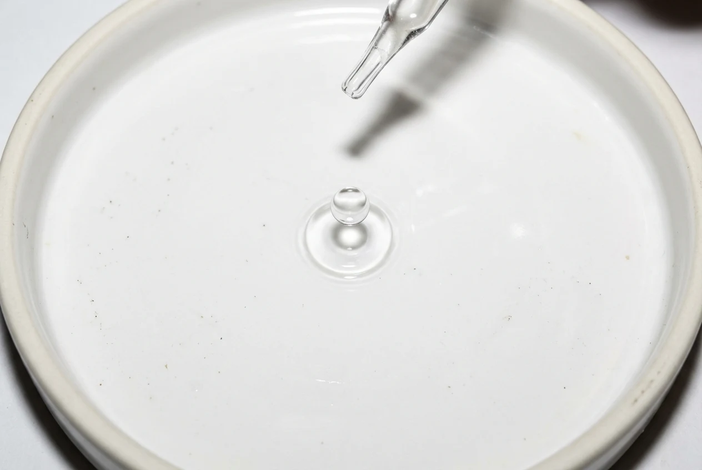
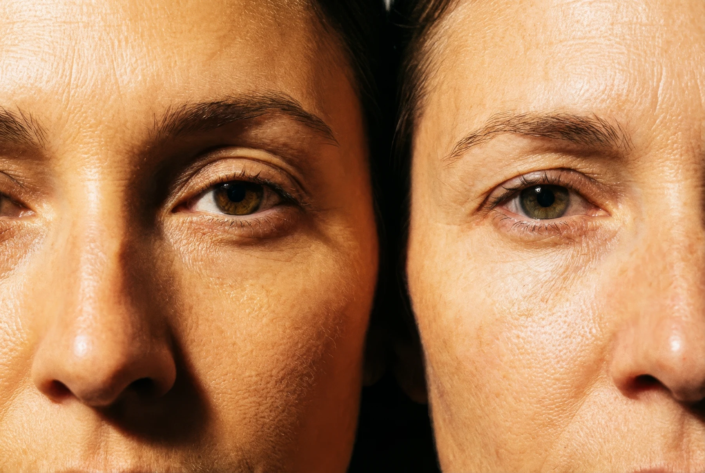
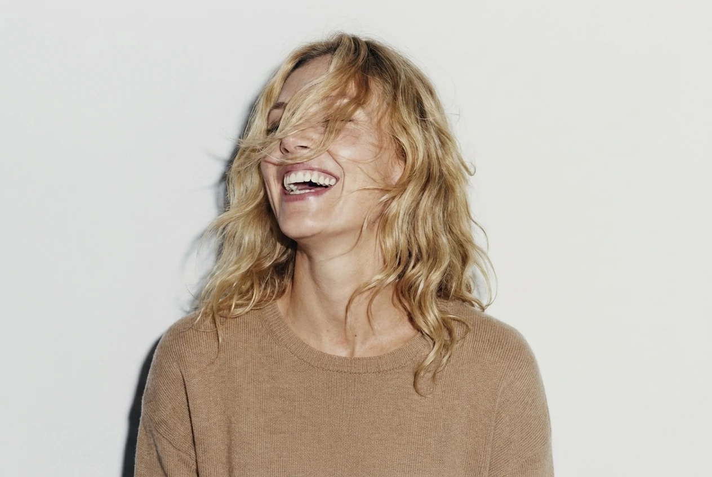
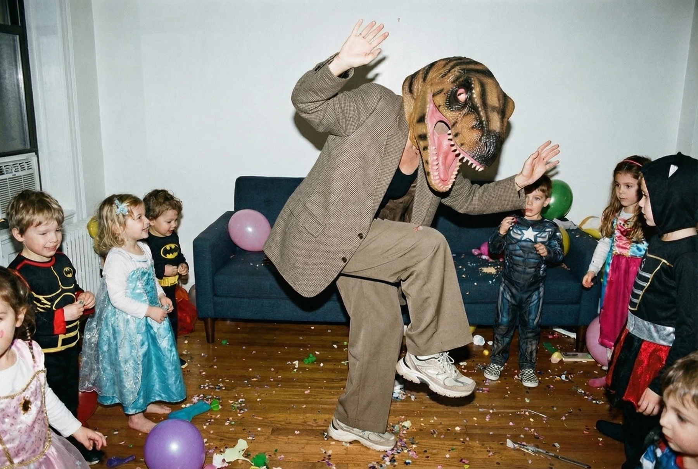
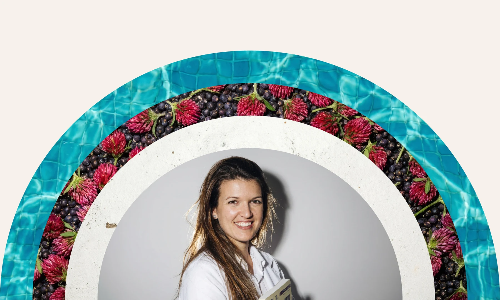

Evidence-based

Onze producten vertrekken vanuit wetenschappelijke onderbouwing. Geen claims zonder bewijs.

Voedingssupplementen voor vrouwen,
gedragen door wetenschappelijke inzichten
Wetenschap als basis. Jij als vertrekpunt. Voor elke vrouw die niet wil vertragen.
Onze basisprincipes
De basis van alles wat we doen.
Onze producten vertrekken vanuit wetenschappelijke onderbouwing. Geen claims zonder bewijs.

Expliciete focus op vrouwelijke fysiologie en hormonale gezondheid. Niet als bijzaak, maar als vertrekpunt.

Gericht op energie, herstel en duurzame vitaliteit. De vrouw als performer, niet als patiënt.
Elke vrouw verandert
Er komt een moment waarop je voelt dat je lichaam verandert. Niet abrupt, maar subtiel — in energie, focus, slaap.
Alba+ is ontwikkeld voor vrouwen die die verandering herkennen, en bewust kiezen om hun lichaam én prestaties te blijven ondersteunen.
Geen overdaad. Geen oppervlakkige oplossingen. Maar zorgvuldig opgebouwde formules, gedragen door wetenschappelijke inzichten, die inspelen op wat er écht verandert.
Met focus op jouw behoefte, ingrediënten doordacht gekozen.
We werken aan een eerste selectie producten, in beperkte oplage.

Het verhaal achter Alba+
We hadden een vraag. En die bleef knagen. Waarom is er zo weinig wetenschappelijk onderbouwde ondersteuning die écht vertrekt vanuit de vrouwelijke fysiologie?
Marthe De Boevre, apotheker en professor, en Tim Van Der Vloedt besloten te ondernemen.
ALBA+ is meer dan een merk.
Het is een verhaal in beweging. Een ecosysteem waar wetenschap, vrouwelijke fysiologie en performance samenkomen.
Geen beige wellness. Geen bullshit.
Wel science mét een hoek af.
Een nieuw hoofdstuk begint
Over onze lancering, onderzoek en verhalen.